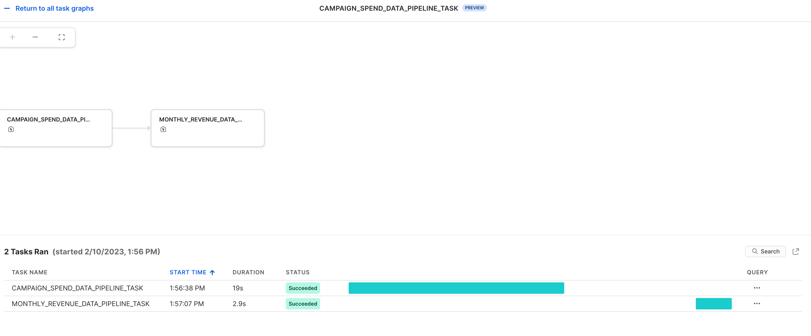

Dopo avere completato questa guida, sarai in grado di trasformare i dati grezzi in un'applicazione interattiva che può aiutare le organizzazioni a ottimizzare l'allocazione del loro budget pubblicitario.
Ecco un riepilogo di ciò che imparerai in ogni passaggio di questo quickstart:
- Configurazione dell'ambiente: utilizzare stage e tabelle per caricare e organizzare dati grezzi da S3 in Snowflake
- Data engineering: utilizzare i DataFrame di Snowpark per Python per eseguire trasformazioni dei dati come raggruppamento, aggregazione, pivot e join per preparare i dati per le applicazioni a valle.
- Pipeline di dati: utilizzare task di Snowflake per trasformare il codice delle pipeline di dati in pipeline operative con monitoraggio integrato.
- Machine Learning: preparare i dati ed eseguire l'addestramento ML in Snowflake utilizzando Snowpark ML e distribuire il modello come Snowpark User Defined Function (UDF).
- Applicazione Streamlit: creare un'applicazione interattiva utilizzando Python (non richiede esperienza di sviluppo web) per aiutare a visualizzare il ROI di diversi budget per le spese pubblicitarie.
Se non hai familiarità con alcune delle tecnologie citate sopra, ecco un breve riepilogo con link alla documentazione.
Che cos'è Snowpark?
Il set di librerie e runtime in Snowflake che consente di distribuire ed elaborare in modo sicuro codice non SQL, ad esempio Python, Java e Scala.
Librerie lato client conosciute: Snowpark consente agli esperti di dati di utilizzare i loro linguaggi preferiti con una programmazione profondamente integrata in stile DataFrame e API compatibili con OSS. Inoltre include la Snowpark ML API per eseguire in modo più efficiente modellazione ML (public preview) e operazioni ML (private preview).
Costrutti runtime flessibili: Snowpark fornisce costrutti runtime flessibili che consentono agli utenti di inserire ed eseguire logica personalizzata. Gli sviluppatori possono creare in modo fluido pipeline di dati, modelli ML e applicazioni basate sui dati utilizzando User Defined Function e stored procedure.
Scopri di più su Snowpark.

Che cos'è Snowpark ML?
Snowpark ML è una nuova libreria che consente uno sviluppo ML end-to-end più rapido e intuitivo in Snowflake. Snowpark ML ha 2 API: Snowpark ML Modeling (in public preview) per lo sviluppo dei modelli e Snowpark ML Operations (in private preview) per la distribuzione dei modelli.
Questo quickstart si concentra sulla Snowpark ML Modeling API, che scala orizzontalmente il feature engineering e semplifica l'addestramento ML in Snowflake.
Che cos'è Streamlit?
Streamlit è un framework per app open source basato su Python che consente agli sviluppatori di scrivere, condividere e distribuire applicazioni basate sui dati in modo rapido e semplice. Scopri di più su Streamlit.
Cosa imparerai
- Come analizzare i dati ed eseguire task di data engineering utilizzando DataFrame e API di Snowpark
- Come utilizzare le librerie Python open source del canale curato Snowflake Anaconda
- Come addestrare un modello ML utilizzando Snowpark ML in Snowflake
- Come creare Snowpark Python User Defined Function (UDF) scalari e vettorizzate, rispettivamente per l'inferenza online e offline
- Come creare task Snowflake per automatizzare le pipeline di dati
- Come creare un'applicazione web Streamlit che utilizza l'UDF scalare per l'inferenza in base all'input dell'utente
Prerequisiti
- Git installato
- Python 3.9 installato
- Nota che creerai un ambiente Python con la versione 3.9 nel passaggio Operazioni iniziali
- Account Snowflake con i pacchetti Anaconda abilitati da ORGADMIN. Se non hai un account Snowflake, puoi registrarti per una prova gratuita.
- Un login per l'account Snowflake con il ruolo ACCOUNTADMIN. Se hai questo ruolo nel tuo ambiente, puoi scegliere di utilizzarlo. In caso contrario, dovrai 1) registrarti per una prova gratuita, 2) utilizzare un ruolo diverso con la capacità di creare database, schemi, tabelle, stage, task, User Defined Function e stored procedure, oppure 3) usare un database e uno schema esistenti in cui puoi creare gli oggetti elencati.
Creare tabelle, caricare dati e configurare stage
Effettua l'accesso a Snowsight utilizzando le tue credenziali per creare tabelle, caricare dati da Amazon S3 e configurare gli stage interni di Snowflake.
Esegui questi comandi SQL per creare il warehouse, il database e lo schema.
USE ROLE ACCOUNTADMIN;
CREATE OR REPLACE WAREHOUSE DASH_L;
CREATE OR REPLACE DATABASE DASH_DB;
CREATE OR REPLACE SCHEMA DASH_SCHEMA;
USE DASH_DB.DASH_SCHEMA;
Esegui questi comandi SQL per creare la tabella CAMPAIGN_SPEND dai dati archiviati nel bucket S3 pubblicamente accessibile.
CREATE or REPLACE file format csvformat
skip_header = 1
type = 'CSV';
CREATE or REPLACE stage campaign_data_stage
file_format = csvformat
url = 's3://sfquickstarts/ad-spend-roi-snowpark-python-scikit-learn-streamlit/campaign_spend/';
CREATE or REPLACE TABLE CAMPAIGN_SPEND (
CAMPAIGN VARCHAR(60),
CHANNEL VARCHAR(60),
DATE DATE,
TOTAL_CLICKS NUMBER(38,0),
TOTAL_COST NUMBER(38,0),
ADS_SERVED NUMBER(38,0)
);
COPY into CAMPAIGN_SPEND
from @campaign_data_stage;
Esegui i seguenti comandi SQL per creare la tabella MONTHLY_REVENUE dai dati archiviati nel bucket S3 pubblicamente accessibile.
CREATE or REPLACE stage monthly_revenue_data_stage
file_format = csvformat
url = 's3://sfquickstarts/ad-spend-roi-snowpark-python-scikit-learn-streamlit/monthly_revenue/';
CREATE or REPLACE TABLE MONTHLY_REVENUE (
YEAR NUMBER(38,0),
MONTH NUMBER(38,0),
REVENUE FLOAT
);
COPY into MONTHLY_REVENUE
from @monthly_revenue_data_stage;
Esegui i seguenti comandi SQL per creare la tabella BUDGET_ALLOCATIONS_AND_ROI che contiene le allocazioni del budget e il ROI degli ultimi sei mesi.
CREATE or REPLACE TABLE BUDGET_ALLOCATIONS_AND_ROI (
MONTH varchar(30),
SEARCHENGINE integer,
SOCIALMEDIA integer,
VIDEO integer,
EMAIL integer,
ROI float
)
COMMENT = '{"origin":"sf_sit-is", "name":"aiml_notebooks_ad_spend_roi", "version":{"major":1, "minor":0}, "attributes":{"is_quickstart":1, "source":"streamlit"}}';
INSERT INTO BUDGET_ALLOCATIONS_AND_ROI (MONTH, SEARCHENGINE, SOCIALMEDIA, VIDEO, EMAIL, ROI) VALUES
('January',35,50,35,85,8.22),
('February',75,50,35,85,13.90),
('March',15,50,35,15,7.34),
('April',25,80,40,90,13.23),
('May',95,95,10,95,6.246),
('June',35,50,35,85,8.22);
Esegui i seguenti comandi per creare stage interni di Snowflake in cui archiviare i file delle stored procedure, delle UDF e dei modelli ML.
CREATE OR REPLACE STAGE dash_sprocs;
CREATE OR REPLACE STAGE dash_models;
CREATE OR REPLACE STAGE dash_udfs;
Facoltativamente, puoi anche aprire setup.sql in Snowsight ed eseguire tutte le istruzioni SQL per creare gli oggetti e caricare i dati da AWS S3.
Questa sezione spiega come clonare il repository GitHub e come configurare il tuo ambiente Snowpark per Python.
Clonare il repository GitHub
Il primo passaggio è clonare il repository GitHub. Questo repository contiene tutto il codice che ti servirà per completare questo quickstart.
Usando HTTPS:
git clone https://github.com/Snowflake-Labs/sfguide-getting-started-dataengineering-ml-snowpark-python.git
OPPURE, usando SSH:
git clone git@github.com:Snowflake-Labs/sfguide-getting-started-dataengineering-ml-snowpark-python.git
Snowpark per Python
Per completare i passaggi Data Engineering e Machine Learning, puoi scegliere se installare tutto localmente (opzione 1) oppure utilizzare Hex (opzione 2), come descritto di seguito.
Opzione 1: Installazione locale
Questa opzione ti consentirà di eseguire tutti i passaggi di questo quickstart.
Passaggio 1: scarica e installa il programma di installazione miniconda da https://conda.io/miniconda.html (OPPURE puoi usare qualsiasi altro ambiente Python con Python 3.9, ad esempio virtualenv).
Passaggio 2: apri una nuova finestra Terminale ed esegui i seguenti comandi nella stessa finestra Terminale.
Passaggio 3: crea l'ambiente conda Python 3.9 chiamato snowpark-de-ml eseguendo il seguente comando nella stessa finestra Terminale
conda create --name snowpark-de-ml -c https://repo.anaconda.com/pkgs/snowflake python=3.9
Passaggio 4: attiva l'ambiente conda snowpark-de-ml eseguendo il seguente comando nella stessa finestra Terminale
conda activate snowpark-de-ml
Passaggio 5: installa Snowpark Python e le altre librerie nell'ambiente conda snowpark-de-ml dal canale Snowflake Anaconda eseguendo il seguente comando nella stessa finestra Terminale
conda install -c https://repo.anaconda.com/pkgs/snowflake snowflake-snowpark-python pandas notebook scikit-learn cachetools
Passaggio 6: installa la libreria Streamlit nell'ambiente conda snowpark-de-ml eseguendo il seguente comando nella stessa finestra Terminale
pip install streamlit
Passaggio 7: installa la libreria Snowpark ML nell'ambiente conda snowpark-de-ml eseguendo il seguente comando nella stessa finestra Terminale
pip install snowflake-ml-python
Passaggio 9: aggiorna connection.json con i dettagli e le credenziali del tuo account Snowflake.
Ecco un esempio di connection.json basato sui nomi degli oggetti citati nel passaggio Configurazione dell'ambiente.
{
"account" : "<your_account_identifier_goes_here>",
"user" : "<your_username_goes_here>",
"password" : "<your_password_goes_here>",
"role" : "ACCOUNTADMIN",
"warehouse" : "DASH_L",
"database" : "DASH_DB",
"schema" : "DASH_SCHEMA"
}
Opzione 2: Utilizza Hex
Se scegli di utilizzare il tuo account Hex esistente o di creare un account di prova gratuita di 30 giorni, Snowpark per Python è integrato, quindi non dovrai creare un ambiente Python e installare localmente Snowpark per Python insieme alle altre librerie sul tuo laptop. Questo ti consentirà di completare i passaggi Data Engineering e Machine Learning di questo quickstart direttamente in Hex. (Vedi i rispettivi passaggi per i dettagli su come caricare i notebook di data engineering e di machine learning in Hex.)
Il notebook disponibile al link riportato sotto comprende le seguenti attività di data engineering.
- Stabilire una connessione sicura da Snowpark Python a Snowflake
- Caricare dati da tabelle Snowflake in DataFrame Snowpark
- Eseguire analisi dei dati esplorativa su DataFrame Snowpark
- Eseguire pivot e join di dati provenienti da più tabelle utilizzando DataFrame Snowpark
- Automatizzare le attività della pipeline di dati utilizzando task di Snowflake
Notebook di data engineering in Jupyter o Visual Studio Code
Per iniziare, segui questi passaggi:
- In una finestra Terminale, spostati in questa cartella ed esegui
jupyter notebookdalla riga di comando. (Puoi anche utilizzare altri strumenti e IDE, come Visual Studio Code.) - Apri ed esegui le celle in Snowpark_For_Python_DE.ipynb
Notebook di data engineering in Hex
Se scegli di utilizzare il tuo account Hex esistente o di creare un account di prova gratuita di 30 giorni, segui questi passaggi per caricare il notebook e creare una connessione dati a Snowflake da Hex.
- Importa Snowpark_For_Python_DE.ipynb come progetto nel tuo account. Per maggiori informazioni sull'importazione, consulta la documentazione.
- Quindi, invece di utilizzare connection.json per la connessione a Snowflake, crea una connessione dati e utilizzala nel notebook di data engineering, come illustrato di seguito.

- Sostituisci il seguente frammento di codice nel notebook
connection_parameters = json.load(open('connection.json'))
session = Session.builder.configs(connection_parameters).create()
con...
import hextoolkit
hex_snowflake_conn = hextoolkit.get_data_connection('YOUR_DATA_CONNECTION_NAME')
session = hex_snowflake_conn.get_snowpark_session()
session.sql('USE SCHEMA DASH_SCHEMA').collect()
Puoi anche implementare le trasformazioni dei dati sotto forma di pipeline di dati automatizzate eseguite in Snowflake.
In particolare, il notebook di data engineering contiene una sezione che dimostra come creare ed eseguire facoltativamente le trasformazioni dei dati come task di Snowflake.
A scopo di riferimento, questi sono i frammenti di codice.
Task principale/parent
Questo task automatizza il caricamento dei dati delle spese per la campagna e l'esecuzione di varie trasformazioni.
def campaign_spend_data_pipeline(session: Session) -> str:
# DATA TRANSFORMATIONS
# Perform the following actions to transform the data
# Load the campaign spend data
snow_df_spend_t = session.table('campaign_spend')
# Transform the data so we can see total cost per year/month per channel using group_by() and agg() Snowpark DataFrame functions
snow_df_spend_per_channel_t = snow_df_spend_t.group_by(year('DATE'), month('DATE'),'CHANNEL').agg(sum('TOTAL_COST').as_('TOTAL_COST')).
with_column_renamed('"YEAR(DATE)"',"YEAR").with_column_renamed('"MONTH(DATE)"',"MONTH").sort('YEAR','MONTH')
# Transform the data so that each row will represent total cost across all channels per year/month using pivot() and sum() Snowpark DataFrame functions
snow_df_spend_per_month_t = snow_df_spend_per_channel_t.pivot('CHANNEL',['search_engine','social_media','video','email']).sum('TOTAL_COST').sort('YEAR','MONTH')
snow_df_spend_per_month_t = snow_df_spend_per_month_t.select(
col("YEAR"),
col("MONTH"),
col("'search_engine'").as_("SEARCH_ENGINE"),
col("'social_media'").as_("SOCIAL_MEDIA"),
col("'video'").as_("VIDEO"),
col("'email'").as_("EMAIL")
)
# Save transformed data
snow_df_spend_per_month_t.write.mode('overwrite').save_as_table('SPEND_PER_MONTH')
# Register data pipelining function as a Stored Procedure so it can be run as a task
session.sproc.register(
func=campaign_spend_data_pipeline,
name="campaign_spend_data_pipeline",
packages=['snowflake-snowpark-python'],
is_permanent=True,
stage_location="@dash_sprocs",
replace=True)
campaign_spend_data_pipeline_task = """
CREATE OR REPLACE TASK campaign_spend_data_pipeline_task
WAREHOUSE = 'DASH_L'
SCHEDULE = '3 MINUTE'
AS
CALL campaign_spend_data_pipeline()
"""
session.sql(campaign_spend_data_pipeline_task).collect()
Task secondario/child
Questo task automatizza il caricamento dei dati dei ricavi mensili, l'esecuzione di varie trasformazioni dei dati e il join di questi dati con i dati di spesa della campagna trasformati.
def monthly_revenue_data_pipeline(session: Session) -> str:
# Load revenue table and transform the data into revenue per year/month using group_by and agg() functions
snow_df_spend_per_month_t = session.table('spend_per_month')
snow_df_revenue_t = session.table('monthly_revenue')
snow_df_revenue_per_month_t = snow_df_revenue_t.group_by('YEAR','MONTH').agg(sum('REVENUE')).sort('YEAR','MONTH').with_column_renamed('SUM(REVENUE)','REVENUE')
# Join revenue data with the transformed campaign spend data so that our input features (i.e. cost per channel) and target variable (i.e. revenue) can be loaded into a single table for model training
snow_df_spend_and_revenue_per_month_t = snow_df_spend_per_month_t.join(snow_df_revenue_per_month_t, ["YEAR","MONTH"])
# SAVE in a new table for the next task
snow_df_spend_and_revenue_per_month_t.write.mode('overwrite').save_as_table('SPEND_AND_REVENUE_PER_MONTH')
# Register data pipelining function as a Stored Procedure so it can be run as a task
session.sproc.register(
func=monthly_revenue_data_pipeline,
name="monthly_revenue_data_pipeline",
packages=['snowflake-snowpark-python'],
is_permanent=True,
stage_location="@dash_sprocs",
replace=True)
monthly_revenue_data_pipeline_task = """
CREATE OR REPLACE TASK monthly_revenue_data_pipeline_task
WAREHOUSE = 'DASH_L'
AFTER campaign_spend_data_pipeline_task
AS
CALL monthly_revenue_data_pipeline()
"""
session.sql(monthly_revenue_data_pipeline_task).collect()
Avviare i task
I task di Snowflake non vengono avviati di default, quindi è necessario eseguire la seguente istruzione per avviarli/riprenderli.
session.sql("alter task monthly_revenue_data_pipeline_task resume").collect()
session.sql("alter task campaign_spend_data_pipeline_task resume").collect()
Sospendere i task
Se riprendi i task riportati sopra, sospendili per evitare un utilizzo superfluo delle risorse eseguendo i seguenti comandi.
session.sql("alter task campaign_spend_data_pipeline_task suspend").collect()
session.sql("alter task monthly_revenue_data_pipeline_task suspend").collect()
Osservabilità dei task
Questi task e i relativi DAG possono essere visualizzati in Snowsight come illustrato di seguito.

Notifiche di errore per i task
Puoi anche abilitare le notifiche push verso un servizio di messaggistica cloud quando si verificano errori durante l'esecuzione dei task. Per maggiori informazioni, consulta la documentazione.
Il notebook disponibile al link qui sotto comprende le seguenti attività di machine learning.
- Stabilire una connessione sicura da Snowpark Python a Snowflake
- Caricare caratteristiche e target da una tabella Snowflake in un DataFrame di Snowpark
- Preparare le caratteristiche per l'addestramento del modello
- Addestrare un modello ML utilizzando Snowpark ML su Snowflake
- Creare Python User Defined Function (UDF) scalari e vettorizzate (dette anche batch) per l'inferenza su nuovi punti dati, rispettivamente online e offline.

Notebook di machine learning in Jupyter or Visual Studio Code
Per iniziare, segui questi passaggi:
- In una finestra Terminale, spostati in questa cartella ed esegui
jupyter notebookdalla riga di comando. (Puoi anche utilizzare altri strumenti e IDE, come Visual Studio Code.) - Apri ed esegui Snowpark_For_Python_ML.ipynb
Notebook di machine learning in Hex
Se scegli di utilizzare il tuo account Hex esistente o di creare un account di prova gratuita di 30 giorni, segui questi passaggi per caricare il notebook e creare una connessione dati a Snowflake da Hex.
- Importa Snowpark_For_Python_ML.ipynb come progetto nel tuo account. Per maggiori informazioni sull'importazione, consulta la documentazione.
- Quindi, invece di utilizzare connection.json per la connessione a Snowflake, crea una connessione dati e utilizzala nel notebook di machine learning, come illustrato di seguito.
- Sostituisci il seguente frammento di codice nel notebook
connection_parameters = json.load(open('connection.json'))
session = Session.builder.configs(connection_parameters).create()
con...
import hextoolkit
hex_snowflake_conn = hextoolkit.get_data_connection('YOUR_DATA_CONNECTION_NAME')
session = hex_snowflake_conn.get_snowpark_session()
session.sql('USE SCHEMA DASH_SCHEMA').collect()
Eseguire l'app Streamlit localmente
In una finestra Terminale, spostati in questa cartella ed esegui il seguente comando per lanciare l'applicazione Streamlit Snowpark_Streamlit_Revenue_Prediction.py localmente sul tuo computer.
streamlit run Snowpark_Streamlit_Revenue_Prediction.py
Se non si verificano problemi, dovrebbe aprirsi una finestra del browser con l'app caricata, come illustrato sotto.

Eseguire l'app Streamlit in Snowflake – Streamlit-in-Snowflake (SiS)
Se nel tuo account è abilitato SiS, segui questi passaggi per eseguire l'applicazione in Snowsight anziché localmente sul tuo computer.
- Fai clic su Streamlit Apps nel menu di navigazione sulla sinistra
- Fai clic su + Streamlit App in alto a destra
- Inserisci il nome dell'app in App name
- Seleziona Warehouse e App location (database e schema) dove desideri creare l'applicazione Streamlit
- Fai clic su Create
- A questo punto ti verrà fornito il codice per un'applicazione Streamlit di esempio. Ora apri Snowpark_Streamlit_Revenue_Prediction_SiS.py, copia il codice e incollalo nell'applicazione Streamlit di esempio.
- Fai clic su Run in alto a destra
Se non si verificano problemi, dovrebbe comparire l'app illustrata di seguito in Snowsight.

Salvare dati in Snowflake
In entrambe le applicazioni, regola i cursori del budget pubblicitario per vedere il ROI previsto per le diverse allocazioni. Puoi anche fare clic sul pulsante Save to Snowflake per salvare le allocazioni correnti e il ROI previsto corrispondente nella tabella Snowflake BUDGET_ALLOCATIONS_AND_ROI.
Differenze tra le due app Streamlit
La differenza principale tra l'app Streamlit eseguita localmente e in Snowflake (SiS) è il modo in cui si crea e si accede all'oggetto Sessione.
Quando l'app viene eseguita localmente, si crea e si accede al nuovo oggetto Sessione in questo modo:
# Function to create Snowflake Session to connect to Snowflake
def create_session():
if "snowpark_session" not in st.session_state:
session = Session.builder.configs(json.load(open("connection.json"))).create()
st.session_state['snowpark_session'] = session
else:
session = st.session_state['snowpark_session']
return session
Quando l'app viene eseguita in Snowflake (SiS), si accede all'oggetto Sessione corrente in questo modo:
session = snowpark.session._get_active_session()
Se hai avviato/ripreso i due task monthly_revenue_data_pipeline_task e campaign_spend_data_pipeline_task nelle sezioni Data Engineering o Pipeline di dati, è importante eseguire i seguenti comandi per sospendere tali task, in modo da evitare un utilizzo superfluo delle risorse.
In Notebook utilizzando la Snowpark Python API
session.sql("alter task campaign_spend_data_pipeline_task suspend").collect()
session.sql("alter task monthly_revenue_data_pipeline_task suspend").collect()
In Snowsight
alter task campaign_spend_data_pipeline_task suspend;
alter task monthly_revenue_data_pipeline_task suspend;
Congratulazioni! Hai eseguito attività di data engineering e addestrato un modello di regressione lineare per prevedere il ROI futuro di diversi budget per le spese pubblicitarie su più canali, tra cui ricerca, video, social media ed email, utilizzando Snowpark per Python e scikit-learn. Poi hai creato un'applicazione Streamlit che utilizza tale modello per generare previsioni sulle nuove allocazioni del budget in base all'input dell'utente.
Vogliamo conoscere la tua opinione su questo quickstart! Inviaci i tuoi commenti utilizzando questo modulo di feedback.
Che cosa hai imparato
- Come analizzare i dati ed eseguire task di data engineering utilizzando DataFrame e API di Snowpark
- Come utilizzare le librerie Python open source del canale curato Snowflake Anaconda
- Come addestrare un modello ML utilizzando Snowpark ML in Snowflake
- Come creare Snowpark Python User Defined Function (UDF) scalari e vettorizzate, rispettivamente per l'inferenza online e offline
- Come creare task di Snowflake per automatizzare la pipeline di dati e il (ri)addestramento del modello
- Come creare un'applicazione web Streamlit che utilizza l'UDF scalare per l'inferenza